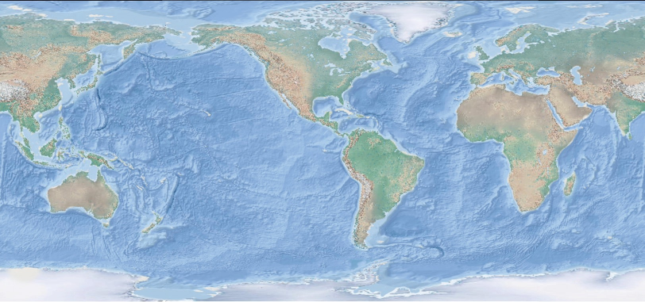

เนื้อหาเรื่อง : การแปรสัณฐานของแผ่นธรณี
โดยบทเรียนนี้จะประกอบไปด้วย 4 หน่วยการเรียนรู้ย่อย

-
แนวคิดของทฤษฎีทวีปเลื่อนและหลักฐานสนับสนุน
-
แนวคิดทฤษฎีการแผ่ขยายพื้นมหาสมุทรและหลักฐานสนับสนุน
-
การแปรสัณฐานของแผ่นธรณี
-
ธรณีสัณฐานและโครงสร้างทางธรณีที่เกิดจากการเคลื่อนที่ของ แผ่นธรณี